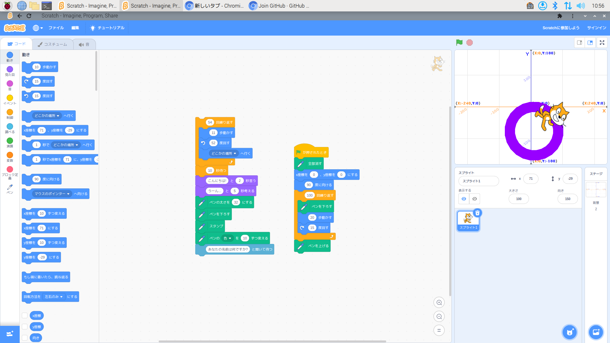
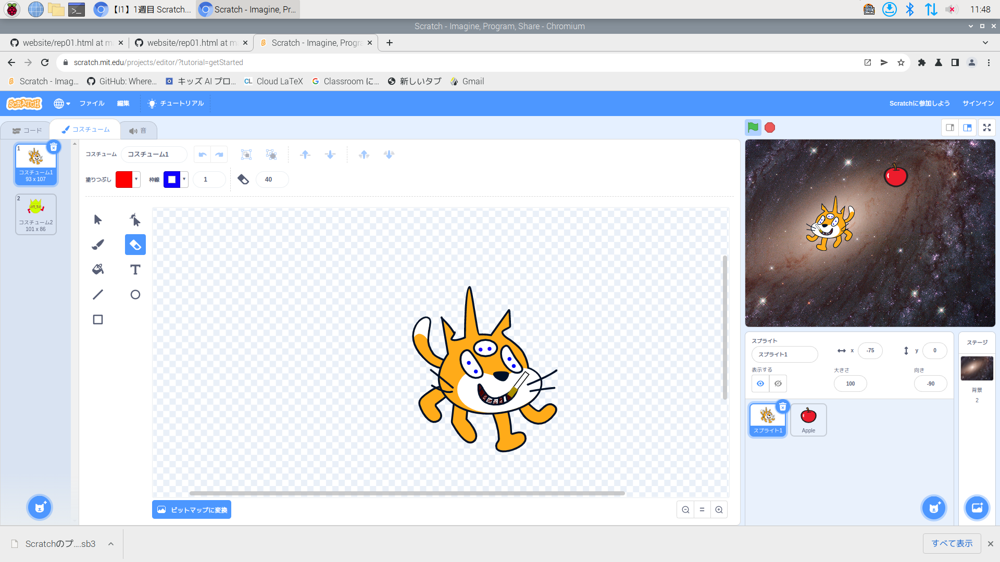
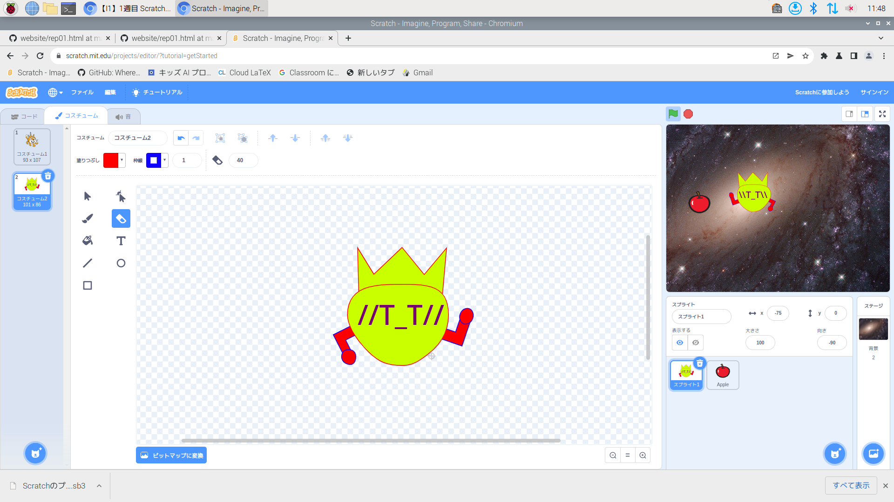
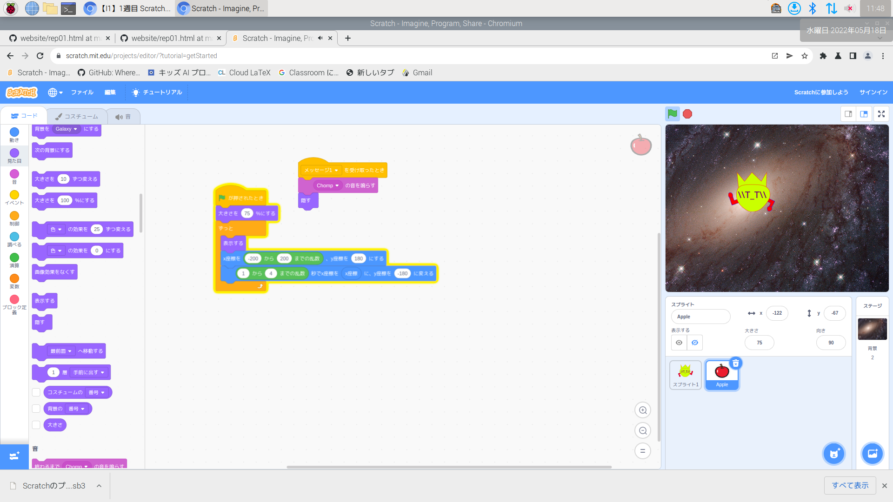
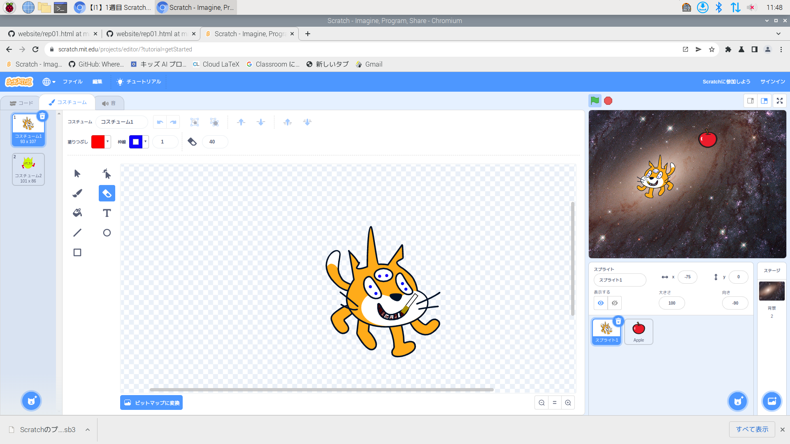
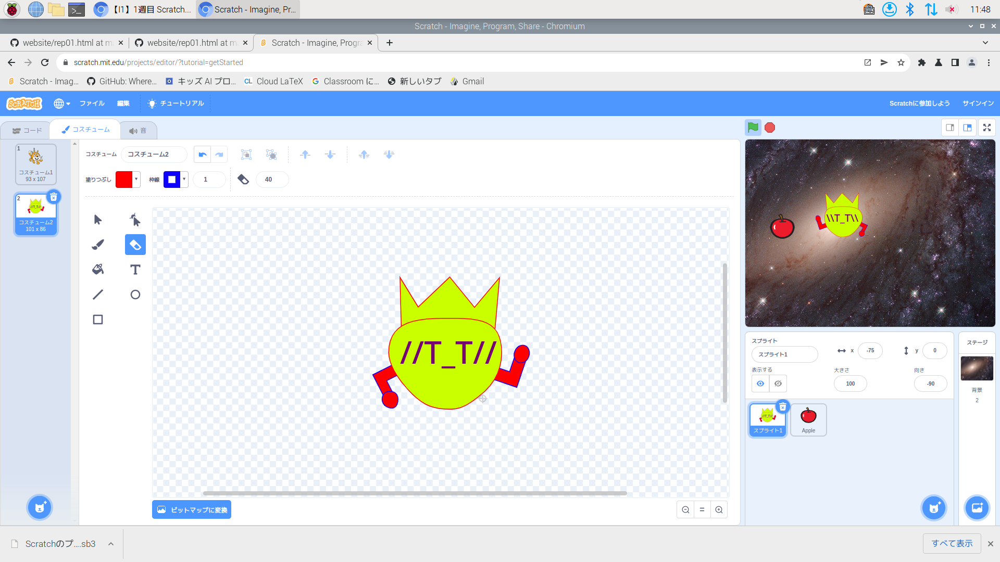
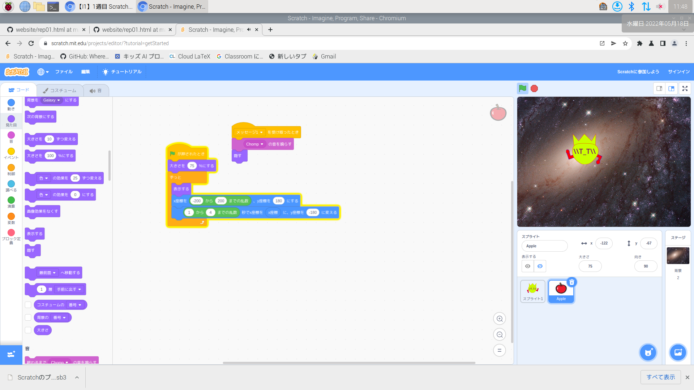

第1週目
1-1 サイエンスアート

1.内容
Scratchというページをまず開く。 • https://scratch.mit.edu/ ネコの動きに合わせて線を引きます。 ネコを移動させるプログラム 移動に合わせて線を引く 書くたびに先の色を変える 繰り返し移動させて図形を描く 背景を座標に変える ネコを動かす ペンの追加 円のような図を3種類描く
2.感想
かんそうかんそう
Scratchというページをまず開く。 • https://scratch.mit.edu/ ネコの動きに合わせて線を引きます。 ネコを移動させるプログラム 移動に合わせて線を引く 書くたびに先の色を変える 繰り返し移動させて図形を描く 背景を座標に変える ネコを動かす ペンの追加 円のような図を3種類描く
2.感想
かんそうかんそう
1-2 ゲーム
 





1.内容
ネコを移動させる 旗が押されたら x=-120, y=-90 スプライトに触れたら動く、音が鳴る、コスチュームを変える キーボードの矢印キーで動作させる 反転の設定をする 背景の設定 猫が移動する りんごを落とす りんごを落とす位置と落下速度をランダムにする りんごを消す 点数をつける (ジャンプする) (音を追加) ゲーム完成
2.感想
かんそうかんそう
ネコを移動させる 旗が押されたら x=-120, y=-90 スプライトに触れたら動く、音が鳴る、コスチュームを変える キーボードの矢印キーで動作させる 反転の設定をする 背景の設定 猫が移動する りんごを落とす りんごを落とす位置と落下速度をランダムにする りんごを消す 点数をつける (ジャンプする) (音を追加) ゲーム完成
2.感想
かんそうかんそう
1-3 ホームページ作成
私のホームページ
1.内容
Chromeを起動して Githubのアカウントをつくる 1. Chromiumの起動 2. URL欄に github.co.jp を入力 3. https://github.co.jp/ へ移動する 4. 「サインアップ」をクリック 4 アカウントを作る 1. アカウント作成 2. サイトを使うための登録とIDとPWの設定 3. Username<他人から見える/認識し易い 4. Emailアドレス Codeをクリック
8. Rm6. ページ内容を編集する
HomePageを編集する1
1. Index.htmlがHPの正体
2. Rm6. index.htmlをクリック
3. Rm7. ✐マークをクリック
4. Rm8. 24行目 “たいとる“を編集する
HomePageを編集する2
1. Rm8. 24行目 “たいとる“を
2. 例:私のホームページに変更する
3. Rm9. Commit changesをクリックする
4. Rm10.さっき開いたページをリロードする
WEBレポートの作成1
1. Githubのトップページに移動
1. 左上のアイコンをクリック
2. Searchでtmhrdoiを検索
3. Usersをクリック
4. websiteをクリック
5. リポジトリが開く
WEBレポートの作成2
1. rep01.htmlをクリック
2. コピーボタンでhtmlをコピー
3. 自分のwebsiteリポジトリに戻る
4. 右上の〇をクリック
5. Your repositoriesを選ぶ
WEBレポートの作成3
1. websiteをクリック
2. Add fileをクリックして
3. Create new fileを選ぶ
4. Name your fileをrep01.html
5. 編集エリアをクリックして
6. Cntl+C(ペースト)
7. Commit changesをクリック
WEBレポートの作成4
1. 自分のHPのURL/rep01.htmlをアクセス
1. https://tmhrdoi.github.io/website/rep01.html
2. 右のようなページが開けば準備完了
3. 自分のリポジトリに戻ってrep01.htmlを開く
4. ✐ボタンで編集してレポート作成
5. 画像の追加方法は別途説明
6. 変更後Commit changesを必ずクリック
2.感想
かんそうかんそう
1.内容
Chromeを起動して Githubのアカウントをつくる 1. Chromiumの起動 2. URL欄に github.co.jp を入力 3. https://github.co.jp/ へ移動する 4. 「サインアップ」をクリック 4 アカウントを作る 1. アカウント作成 2. サイトを使うための登録とIDとPWの設定 3. Username<他人から見える/認識し易い 4. Emailアドレス
2.感想
かんそうかんそう